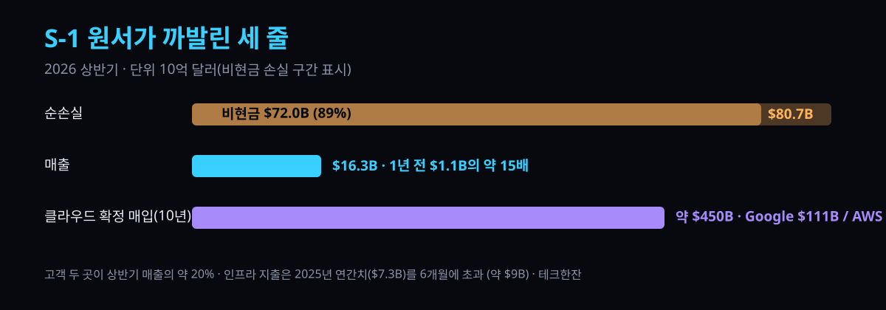

"80조 손실"의 9할은 가짜 돈 — Anthropic IPO 원서가 까발린 숫자

어제(현지 10/20) 월스트리트저널이 Anthropic의 IPO 제출용 S-1 초안을 입수했습니다. 헤드라인만 보면 참사입니다 — 2026년 상반기 순손실 807억 달러. 그런데 이 숫자를 그대로 믿으면 지갑을 잘못 열게 됩니다. 손실의 89%는 돈이 아니라 회계 숫자이고, 진짜 이야기는 손실 항목이 아니라 매출·계약·의무 세 줄에 다 담겨 있습니다.
30초 요약
| 항목 | 숫자 |
|---|---|
| 상반기 순손실 | $80.7B (전년 동기 $13B) |
| — 현금 아닌 손실 | $72B: 전환사채 등 자금조달 증권의 평가액 변동분 (비현금 회계 조정) |
| 상반기 매출 | $16.3B (전년 동기 $1.1B — 약 15배) |
| 상반기 인프라 지출 | 약 $9B (2025년 연간 총액 $7.3B을 6개월에 초과) |
| 클라우드 확정 매입 의무 | 향후 10년 약 $450B (Google Cloud $111B·AWS $110B·Microsoft $31B) |
| 연산력 총투입 시그널 | 협상 중인 건까지 포함해 향후 수년 내 최대 $750B |
| 고객 집중 | 상반기 매출의 약 20%를 고객 두 곳이 차지 |
| 그 이후 | 3분기 매출 $16.8B(+45%), 이르면 11월 IPO — 기업가치 $2조 설 |
손실 807억의 읽는 법 — 720억은 '종이 손실'입니다
손실 807억 달러 중 720억 달러는 회사가 실제로 지불한 돈이 아닙니다. 자금 조달로 발행한 전환사채와 유사 증권들의 평가액이 오른 것을 회계 기준으로 손실에 반영한 금액입니다. 즉 "회사 통장에서 720억이 나갔다"가 아니라 "초기 투자자들에게 약속한 지분의 눈금이 올라갔다"는 뜻에 가깝습니다. 이 항목을 빼면 영업 성격의 적자 폭은 100억 달러 안팎으로 읽혀야 합니다.
비현금 손실이라고 해서 의미가 없는 건 아닙니다. 이 숫자가 크다는 건 그만큼 지분 희석이 예정되어 있다는 뜻이고, IPO로 공개 시장 투자자에게 넘길 청구서가 그만큼 두꺼워진다는 뜻입니다.
진짜 숫자 두 개 — 매출 15배와 6개월 장부 9조짜리 전기세
상반기 매출 $16.3B는 1년 전 $1.1B의 약 15배입니다. 성장률만 보면 사기급이고, 실제로 WSJ은 "red-hot growth"로 정리했습니다. 그런데 같은 장부의 아래쪽이 문제입니다. 상반기 인프라 지출 약 $9B — 2025년 한 해 인프라 총지출 $7.3B을 6개월 만에 넘었습니다.
이 두 줄을 합치면 구조가 한 문장으로 요약됩니다: 파는 속도는 15배, 사오는 속도는 그보다 빨리. AI 모델사의 원가가 인건비가 아니라 전력·칩·데이터센터라는 점이 S-1에 그대로 찍힌 겁니다.
4,500억 달러의 청구서 — 해지 불가능이 핵심입니다
가장 무거운 항목은 손실도 매출도 아닌 의무입니다. Anthropic은 향후 10년간 클라우드 연산력을 약 $450B어치 해지 불가능한 계약으로 확정 매입해 놓았습니다. Google Cloud $111B, AWS $110B, Microsoft $31B. 여기에 협상 중인 건들까지 더하면 연산력 확보에 투입할 수 있는 총액 시그널은 $750B까지 열립니다.
클라우드 3사와 동시에 이 정도 규모 계약을 맺은 회사는 공개 시장에서 찾아보기 어렵습니다. 이 항목은 투자자에게 "3사에 발목 잡힌 회사"로 읽힐 수도, "3사가 10년간 돈을 보장한 회사"로 읽힐 수도 있습니다. 어느쪽 프레이밍이 이기든, AI 인프라 가격이 지금보다 싸지지 않을 것이라는 전제가 계약서에 박혀 있다는 점은 확실히 보입니다.
살얼음 한 칸 — 고객 두 곳이 매출의 20%
집중 리스크도 원서에 적혔습니다. 상반기 매출의 약 20%를 고객 두 곳이 만들었고, 회사는 "제한된 고객층이 상당 기간 매출의 상당 비중을 낼 것"으로 예상하고 있습니다. 위험 요소 목록에는 모델이 통제 불능이 됐을 때의 피해 시나리오 — 정교한 사이버 공격이나 협박에 악용되는 경우까지 — 가 포함됐습니다. 기술 리스크가 아니라 보험·분쟁 리스크로 적시돼 있다는 점이 신기합니다.
개발자에게 남는 것
당장 API 가격이 바뀌지는 않습니다. 다만 읽어둘 신호는 셋입니다. 첫째, $450B 확정 매입은 연산력이 10년간 이 가격에 실린다는 계약이므로, 추론 가격을 지금보다 낮추는 경쟁에 가장 여유 있는 쪽이 됩니다. 둘째, IPO가 현실화되면 분기 실적이 공개되는 첫 프론티어랩이 돼서 토큰 원가·마진 같은 숫자가 정기적으로 뉴스가 됩니다. 셋째, 고객 집중 20%는 반대로 말하면 엔터프라이즈 두 곳의 전략 변경만으로 실적이 흔들리는 회사에 개발자 툴체인 의존도를 올리고 있다는 뜻입니다. Claude에 파인튜닝·프롬프트 자산을 몰빵한 팀이라면, S-1이 리스크 요인으로 인정한 이 항목을 자기 백업 계획에 반영해 두는 게 합리적입니다.